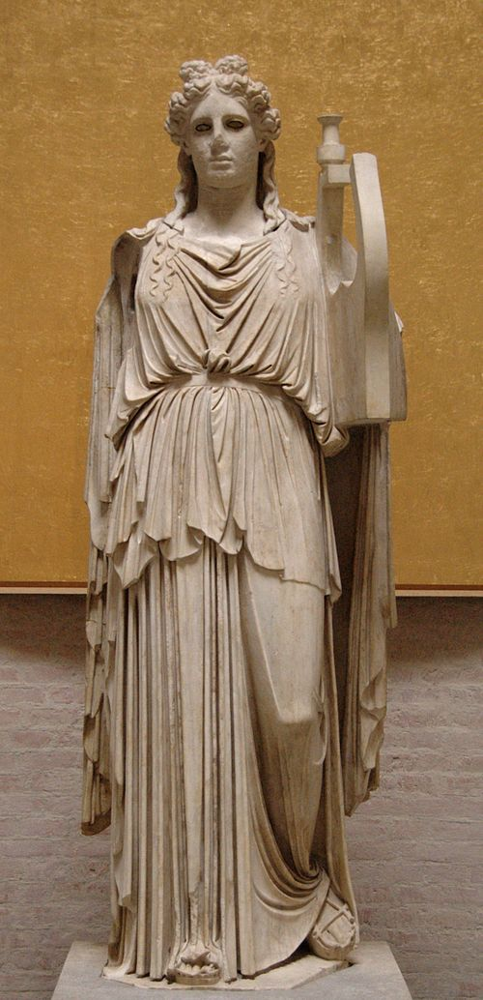

Аполло́н (др.-греч. Ἀπόλλων, лат. Apollo) — в древнегреческой и древнеримской мифологиях бог света (отсюда его прозвище Феб — «лучезарный», «сияющий»), покровитель искусств, предводитель и покровитель муз, предсказатель будущего, бог-врачеватель, покровитель переселенцев, олицетворение мужской красоты. Один из наиболее почитаемых античных богов. В период Поздней Античности олицетворяет Солнце. Согласно множеству античных мифов — сын Зевса и Лето. В возрасте нескольких дней победил живущего на горе Парнас змея Пифона. Рядом с этим местом расположился город Дельфы, который древние греки считали центром мира. Дельфийский оракул — наиболее почитаемое святилище, в котором от имени Аполлона давали пророческие ответы. Контроль над этим городом, спекуляции относительно трактовок «прорицаний Аполлона» стали весомым политическим фактором в Элладе. О важности этого бога свидетельствуют количество праздников, оракулов и храмов в честь Аполлона, название многих месяцев в календаре в честь той или иной его ипостаси. После завоевательных походов Александра Македонского культ Аполлона распространился вплоть до Индостана. В Римской республике его культ был принят в V веке до н. э. Пик его почитания приходится на время правления Октавиана Августа. Римский император выстроил стройную идеологическую систему наступления «золотого века», гарантами которого являются император и Аполлон.

Античная копия статуи Аполлона из храма Аполлона Палатинского в Риме.
Культ Аполлона был распространён в Греции повсеместно. Во многих храмах Аполлона находились оракулы — святилища, в которых от имени Аполлона давали пророческие ответы на задаваемые вопросы. Большинство античных древнегреческих оракулов связывали с Аполлоном. Наиболее известный из них находился в Дельфах. Согласно античным источникам пифия сидела на треножнике перед расщелиной в скале, из которой выходили испарения. Они приводили жрицу в экстатическое состояние, во время которого она и передавала «ответ бога» в виде бессвязных слов. Жрецы придавали им весьма витиеватую стихотворную форму, предполагавшую двоякие толкования. Так, например, царю Лидии Крёзу накануне войны с царём Персии Киром II Великим пифия предсказала, что если он начнёт войну, то погубит царство. Правитель Лидии перешёл со своими войсками приграничную реку Галис, потерпел поражение и в результате погубил своё царство. Филипп II Македонский умудрился выполнить оба толкования пророчества, в результате чего достиг желаемого. Он, будучи молодым человеком, обратился за советом к Аполлону через пифию о том, как стать повелителем всей Греции. Ответ звучал так: «Сражайся серебряными копьями, и ты везде победишь». При этом македонском царе в фаланге стали использовать длинные копья сариссы. Одновременно, наладив финансовые дела в государстве, Филипп II активно использовал золото и серебро для подкупа. Ему приписывают фразу «Так ли уж труднодоступно, чтобы не прошёл и осёл с грузом золота?». В античной истории был даже случай спекуляции и политической борьбы вокруг предсказания пифии. Незадолго до вторжения войск империи Ахеменидов под руководством Ксеркса на территорию Аттики афиняне отправили послов в Дельфы, чтобы узнать о своём будущем у Аполлона. Полученный ответ предвещал неминуемую гибель[75]. Это естественно смутило афинян, и они отважились на повторное обращение к оракулу, но уже в качестве «умоляющих бога о защите». Последующий ответ пифии на первый взгляд оказался не намного лучшим. Однако оракул содержал слова, которые затем использовал афинский стратег Фемистокл для того, чтобы убедить сограждан не падать духом, а продолжить борьбу, переселившись на остров Саламин: "Лишь деревянные стены даёт Зевес Триптогенее, Несокрушимо стоять во спасенье тебе и потомкам... Остров божественный, о Саламин, сыновей своих жён ты погубишь". Фемистокл настоял на том, что «деревянные стены» — афинские корабли[76], а «гибель сыновей» относится к персам, так как в ином случае оракул сказал бы «несчастный Саламин», а не «божественный». Последующие археологические раскопки, а именно нахождение глиняных табличек с декретами Фемистокла, подтвердили правдивость слов античных классиков.

Октавиан Август в виде Аполлона на серебряном денарии.